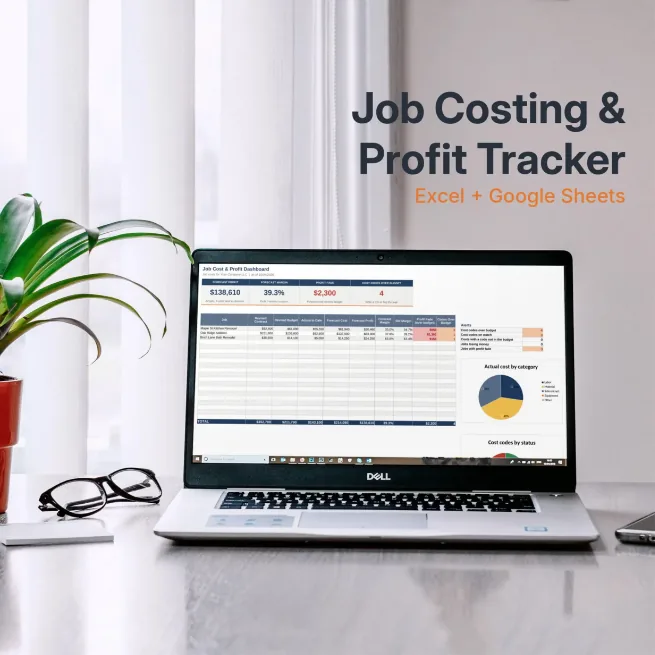
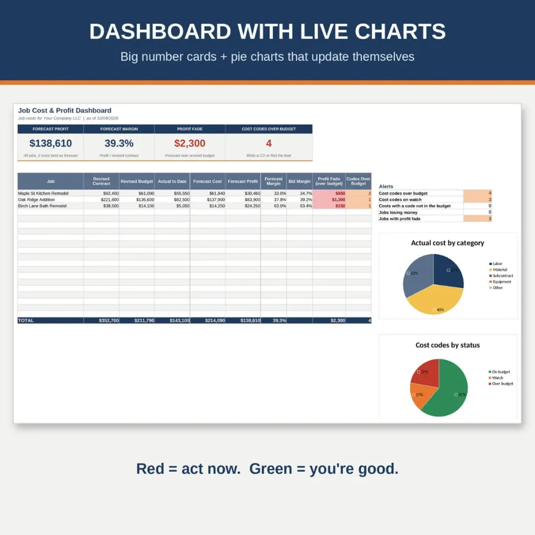

Excel and Google Sheets template
Job costing spreadsheet for contractors
Budget vs actual on every job, cost code by cost code, so you see profit fade while there's still time to do something about it. One file, no macros, no subscription.
$14.50 on Etsy · Instant download

Who it's for
For contractors who want to know where the money went
If your job numbers live in a pile of invoices, a checkbook and your head, this is for you. It fits remodelers, builders and specialty trades who want a job cost tracker in Excel or Google Sheets without signing up for another program.
On most jobs the money doesn't disappear all at once. It leaks out a little at a time: an extra materials run, a sub that ran long, a change you did but never billed. Budget vs actual tracking puts each cost next to what you planned for it, line by line, so you see the leak while the job is still running instead of after the final invoice.
You don't have to be a spreadsheet person. Sample jobs are already filled in so you can see how it all works. Look around, clear them out, then add your own.
What's inside
What's in the job cost tracker
Job Budget
Budget vs actual for each cost code: original budget, approved changes, committed, actual, percent spent, forecast and variance. Color-coded status shows which lines need a look.
Costs Log
Enter each bill once and tag it to a job and a cost code. There are columns for date, vendor, description, invoice number, amount and category.
Jobs
Each job's contract and its approved change orders, so you're measuring against the real contract and not the first number you wrote down.
Job Cost Dashboard
Forecast profit, margin and profit fade at a glance, plus two pie charts: actual cost by category and cost codes by status.
Printable Job Cost Report
A one-page report to bring to a PM meeting or hand to your lender.
Settings + Start Here
Use your own cost codes. The Start Here tab walks you through setup one step at a time.

How it works
Set it up once, check it once a week
Download
Buy on Etsy and download the file. Open it in Excel, or upload it to Google Drive and open it with Google Sheets.
Set up once
Add your cost codes and your jobs. Plan on about 10 minutes.
Log costs
When a bill comes in, add one line to the Costs Log with the job and cost code.
Weekly cost check
Spend about 15 minutes a week on the budget and dashboard and catch overruns early.
Questions
Job costing spreadsheet FAQ
Do I need Excel?
No. It works in Excel and in free Google Sheets. Upload the file to Google Drive and open it with Sheets. There are no macros.
Can I use my own cost codes?
Yes. Set them up once in Settings and use them on every job and every bill.
Where do change orders go?
The Jobs tab holds each job's contract and approved change orders, and the Job Budget has a column for approved changes, so the budget grows with the job. If you want a full change order log with a printable form, look at the change order template.
Is there a subscription?
No. It's a one-time download from Etsy. No subscription, and nothing is locked.
Can I share it with other companies?
It's for use in your own business, so please don't resell or share the file. Message me on Etsy if you need a version for your whole team.
Instant download
Get the job costing spreadsheet
$14.50 on Etsy. You'll see the full listing and check out there.
Get it on EtsyMore kits